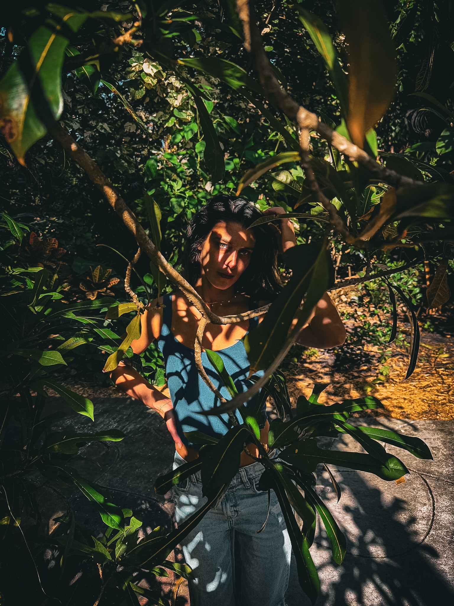
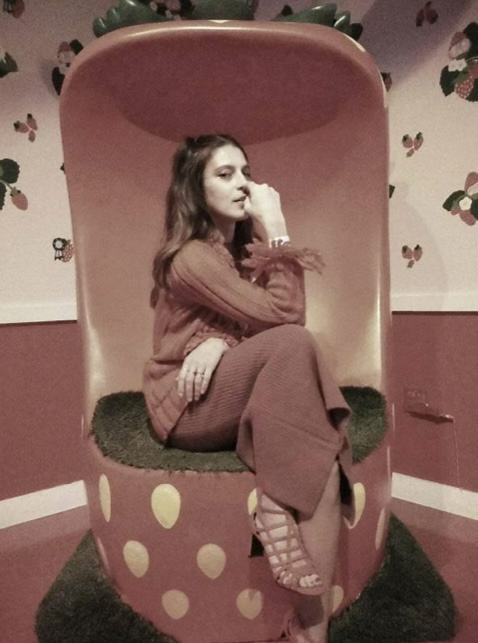

I was sixteen when I asked my mother to sign me up for modeling school. Neither of us really knew what I was asking for. I only knew I wanted to be that girl on the shirt. The face on the poster. The one whose name you never learn, but whose face you swear you've seen somewhere before.
Because when you brush up against the end that early, you can't un-know it. How much beauty is everywhere, all the time. How carelessly we let it slip past us. We spend our lives looking the other way, chasing the shiny, forgettable things, numbing the parts that ache instead of feeling them all the way through.
Once you stop running, you finally start to see.
So now I collect it. All of it. On purpose.
Or maybe just the eyes to finally find it. Now I chase it everywhere. Golden hour on the water. The current of a river over stone. The way energy moves through a morning, through a body, through a stranger's garden. I feel all of it now, louder than I used to.
Every day is an open door. I don't walk past anymore.

I go looking for the parts of the world I haven't met yet. I want to stand somewhere I've never been, in a language I don't speak, and feel how small it makes me. How awake. The world runs on two speeds: chaos, which it calls living, and complacency, which it calls comfort. Both keep you from feeling much of anything at all.
I don't travel to collect places. I travel to let them get into me.
I'm chasing the third thing. A single ripe fig. A warm afternoon. A stranger who waves you into their doorway like they've known you for years. So I keep going out to look for it. And I bring back what I find.
For the place that feels familiar the moment I arrive. The one I've somehow lived a thousand times before. The one my body knows before my mind does, and calls home. I think I'll know it by the way it makes my heart go quiet and happy. By the way I finally stop looking.
I haven't found it yet. Until then, I travel.

There's so much that never makes it to the grid, and this is where it lives. The shoots I don't post. The parts I don't show just anyone. And it never comes to you bare. It always comes with a story. Who I really am.
Unfiltered. Unbothered. Unapologetic.
I know exactly what I am. Confident. Bold. Too much for some people, and completely at peace with that. I follow my own path, and I keep the ones who want to walk it beside me. If you don't? Close your eyes. Turn around. Walk the other way.
Somewhere along the way, we forgot that a story is a kind of spell. So I'm gathering mine back up, the places, the moments, the beautiful strange magic of it all, and giving them somewhere to live. A whole little world, told one picture at a time. Why don't you tag along?